1. 디자인 패턴 개요와 생성 패턴(Creational Pattern)
가. 디자인 패턴의 정의와 역사
디자인 패턴의 목적은 전문가의 설계 노하우를 다른 개발자가 이해·적용할 수 있는 형태로 제공하는 것으로, 확장성·재사용성·유지보수성이 좋은 소프트웨어를 설계하기 위해 사용된다.
나. 디자인 패턴을 기술하는 요소
| 구분 | 내용 |
|---|---|
| 이름(Name) | 패턴 자체의 내용을 효과적으로 전달할 수 있는 간결한 이름 |
| 종류(분류, Classification) | 생성(Creational): 객체 생성 관련 / 구조(Structure): 클래스·객체의 정적 구조 관련 / 행위(Behavioral): 클래스·객체의 반응과 책임 할당 |
| 의도(Intent) | 이 패턴이 무엇을 하며, 어떤 의도로 작성되었고, 무엇을 해결하는지 기술 — 목적 |
| 구조(Structure) | 문제 해결에 사용되는 클래스·객체의 구조를 UML 다이어그램으로 표현 |
| 협력과정 | 각 클래스·객체가 맡은 책임을 수행하기 위해 서로 메시지를 주고받는 과정 |
| Hollywood Principle | "먼저 연락하지 마세요, 저희가 연락드리겠습니다" — 상위 클래스가 하위 클래스를 호출(결정)하며, 의존성 부패를 방지 |
| 디자인 원칙 | 애플리케이션에서 달라지는 부분을 찾아내고, 달라지지 않는 부분으로부터 분리시킨다 |
다. 디자인 패턴의 3대 분류
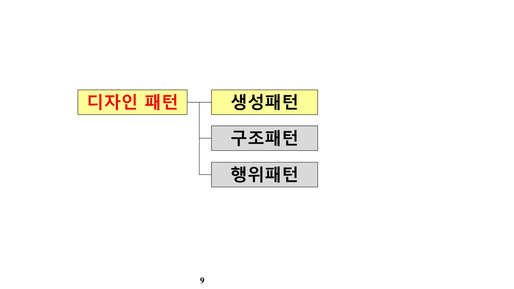
- 생성(Creational): Abstract Factory, Builder, Prototype, Singleton, Factory Method — "객체를 어떻게 만들 것인가"
- 구조(Structural): Adapter, Bridge, Composite, Decorator, Facade, Flyweight, Proxy — "클래스·객체를 어떻게 조합할 것인가"
- 행위(Behavioral): Command, Chain of Responsibility, Interpreter, Iterator, Mediator, Memento, Observer, State, Strategy, Template Method, Visitor — "객체 간 상호작용·책임 분배를 어떻게 할 것인가"
라. 디자인 패턴의 중요한 설계 규칙
- 구현(Implement)이 아니라 인터페이스(Interface)를 가지고 프로그래밍한다 — 인터페이스를 구현한 클래스의 내부 변화에 영향을 받지 않음
- 상속(Inheritance)이 아니라 위임(Delegation)을 사용한다 — 상속은 컴파일 시 구조가 결정되지만, 위임은 런타임에 필요한 객체를 사용
- 커플링(Coupling)을 최소화한다 — God Class를 만들지 않고, 한 클래스의 변화가 전체에 영향을 주지 않도록 함
- 애플리케이션에서 달라지는 부분을 찾아내고, 달라지지 않는 부분으로부터 분리시킨다
마. 생성 패턴(Creational Pattern) 개요
| 패턴 | 설명 |
|---|---|
| 추상 팩토리 (Abstract Factory) | 인터페이스를 이용해 서로 연관·의존하는 객체 군을 구상 클래스를 지정하지 않고 생성. 클라이언트는 어떤 제품이 생산되는지 알 필요가 없음 |
| 빌더 (Builder) | 제품 생산을 여러 단계로 나눠 캡슐화하고 싶을 때 사용(복합 객체의 생성 과정 캡슐화) |
| 프로토타입 (Prototype) | 기존 인스턴스를 복사(clone())하여 새로운 인스턴스를 만드는 패턴 |
| 싱글톤 (Singleton) | 해당 클래스의 인스턴스가 하나만 만들어지고, 어디서든 그 인스턴스에 접근할 수 있도록 하는 패턴 |
| 팩토리 메서드 (Factory Method) | 객체 생성을 위한 인터페이스는 정의하되, 어떤 클래스의 인스턴스를 만들지는 서브클래스가 결정 |
바. Abstract Factory Pattern
| 특징 | 설명 |
|---|---|
| 인터페이스 이용 | 구상 클래스를 생성할 수 있는 인터페이스를 클라이언트에게 제공 |
| 여러 개 객체 생성 | 객체 1개가 아닌 여러 개의 객체를 생성하고, 클라이언트가 선택하게 함 |
| 의존관계 적용 | 의존관계를 추상화 단계에서 결정(제약을 걸 수 있음) |
| 팩토리 메소드와의 관계 | 제품·기능을 생성하므로 팩토리 메소드로 구현되는 경우가 많음 |
※ 개념도: AbstractFactory 인터페이스를 ConcreteFactory1·2가 각각 구현(CreateProductA/B 메소드)하고, Client는 원하는 ConcreteFactory 하나를 선택해 사용하는 구조다.
사. Builder Pattern
| 특징 | 설명 |
|---|---|
| 단계를 캡슐화 | 하나의 Product를 완성하기 위해 복잡한 작업을 거쳐야 할 경우, 복합 객체(Builder) 생성 과정을 캡슐화 |
| 사례 | 여행 예약 시 날짜별 호텔·공연·식사·특별 이벤트를 각각 선택한 뒤 한 번에 계획·결제하는 프로그램 |
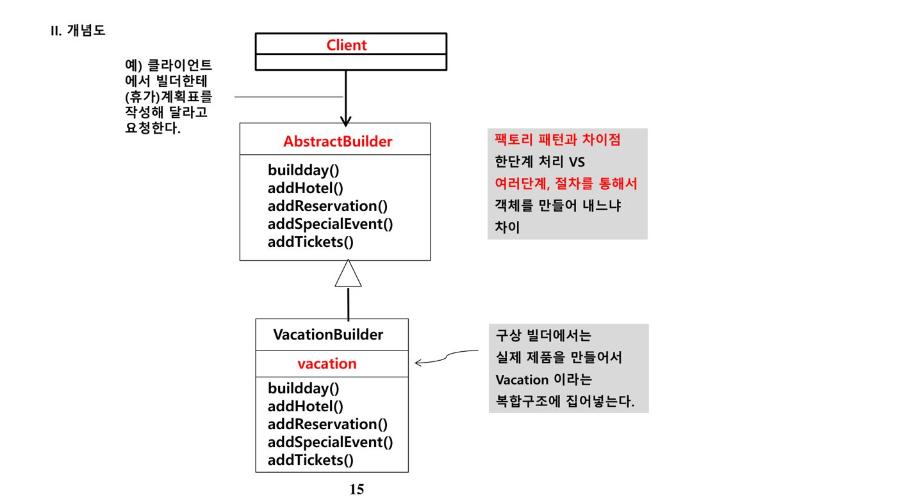
아. Prototype Pattern
| 특징 | 설명 |
|---|---|
| 자원·시간 절약 | 인스턴스 생성에 시간·자원이 많이 드는 경우, 이미 만들어진 객체를 복사해 재사용 |
| 복사 기능 제공 | 자바에서는 clone() 메소드로 구현. (캐스팅) Object.clone(); |
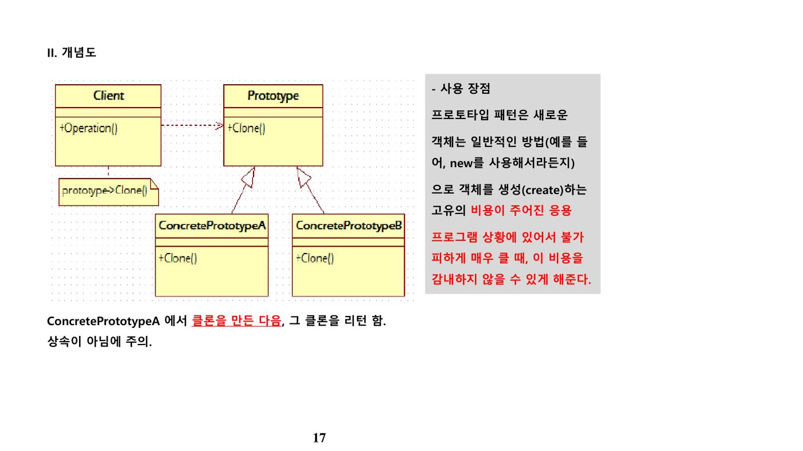
자. Singleton Pattern
static 메소드(관례상 getInstance())를 가지며, 이 메소드는 항상 동일한 인스턴스를 반환한다.생성자는 private(또는 protected)로 선언해 외부에서 직접 생성하지 못하게 막고, getInstance() 내부에서 인스턴스가 없을 때만 new로 생성한 뒤 반환한다. 스레드 풀, 캐시, 대화상자, 사용자 설정, 디바이스 드라이버 등 프로그램 전체에서 객체가 하나만 존재해야 하는 경우에 사용한다.
차. Factory Method Pattern
| 구분 | 설명 |
|---|---|
| 장점 | 자식(하위) 클래스가 어떤 객체를 생성할지 결정하도록 하는 패턴 |
| 단점 | 중첩되기 시작하면 복잡해질 수 있고, 상속을 사용하지만 부모 클래스를 확장하지는 않음 |
Factory Method는 DIP(Dependency Inversion Principle, 의존성 뒤집기 원칙)을 구현하는 대표적인 패턴이다. Creator 클래스는 제품(Product)을 다루는 모든 메소드를 구현하고 있지만, 실제로 제품을 만드는 FactoryMethod()만은 추상 메소드로 남겨두어, ConcreteCreator(서브클래스)가 이를 구현하도록 한다 — 즉 생성의 결정을 전적으로 하위 클래스에 위임한다.
2. 구조 패턴(Structural Patterns)
가. 구조 패턴 개요
구조 패턴은 클래스·객체를 조합해 더 큰 구조를 만드는 방법을 다룬다. Adapter, Bridge, Composite, Decorator, Facade, Flyweight, Proxy가 대표적이다.
나. Adapter Pattern
존재하는 클래스를 사용하고 싶은데 인터페이스가 맞지 않거나, 서로 무관한 클래스와 함께 재사용 가능한 클래스를 만들고자 할 때 사용한다. GoF에 따르면, Adapter 패턴은 호환되지 않는 인터페이스 때문에 함께 동작하지 못하는 클래스들을, 클라이언트가 기대하는 인터페이스로 전환해 함께 동작하게 해준다.
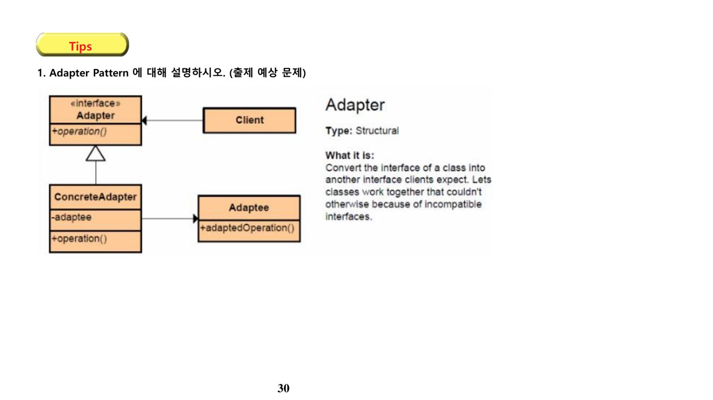
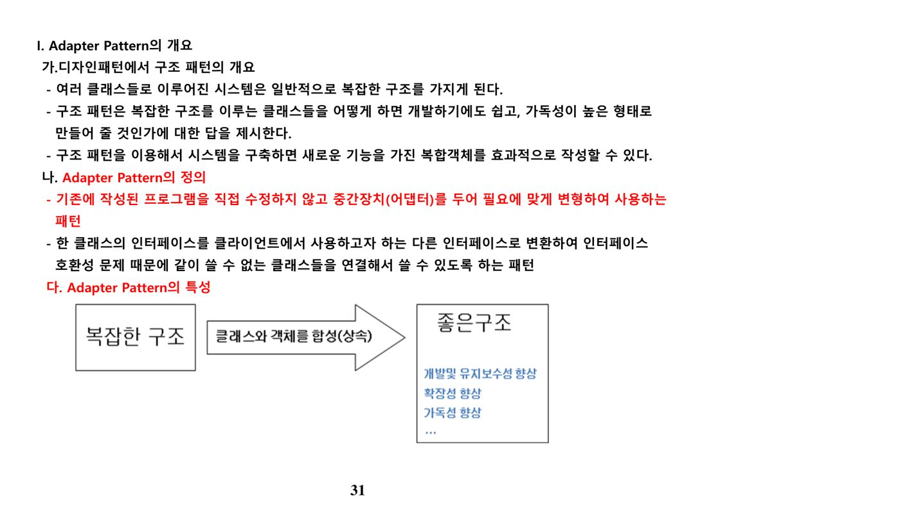
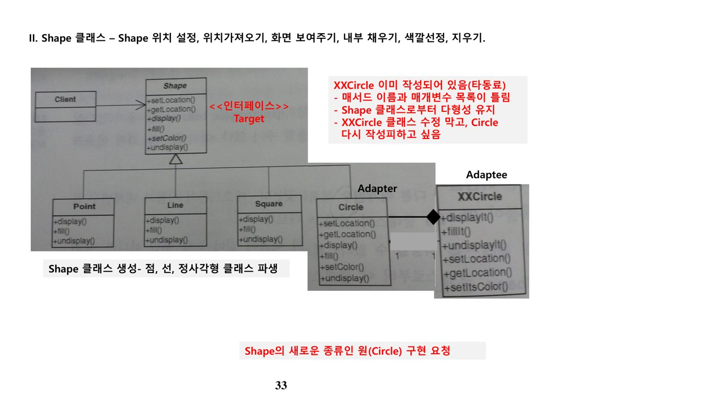
다. Decorator Pattern
| 구분 | 설명 |
|---|---|
| 정의 | 객체에 추가적인 요건을 동적으로 첨가. 서브클래스를 만드는 대신 기능을 유연하게 확장하는 방법을 제공 |
| 장점 | 주어진 상황·용도에 따라 객체에 책임을 덧붙이는 패턴으로, 기능 확장 시 서브클래스 대신 쓸 수 있는 유연한 대안 |
| 예 | Java API의 java.io 패키지에 있는 InputStream, Reader, OutputStream, Writer 등이 모두 Decorator 패턴을 이용(예: 스타벅스의 다양한 커피 주문에 토핑을 추가하는 방식) |
라. Facade Pattern
어떤 서브시스템의 여러 인터페이스에 대한 통합된 인터페이스를 제공하는 구조 패턴이다. 특정 서브시스템의 복잡한 인터페이스 집합에 하나의 단순화된 인터페이스를 제공하기 위한 구조 패턴으로(어댑터를 여러 번 겹쳐 써야 한다면 Facade 적용을 검토), 서버 쪽 인터페이스가 자주 바뀌어도 클라이언트 쪽 변경 없이 대응하고자 할 때 적합하다.
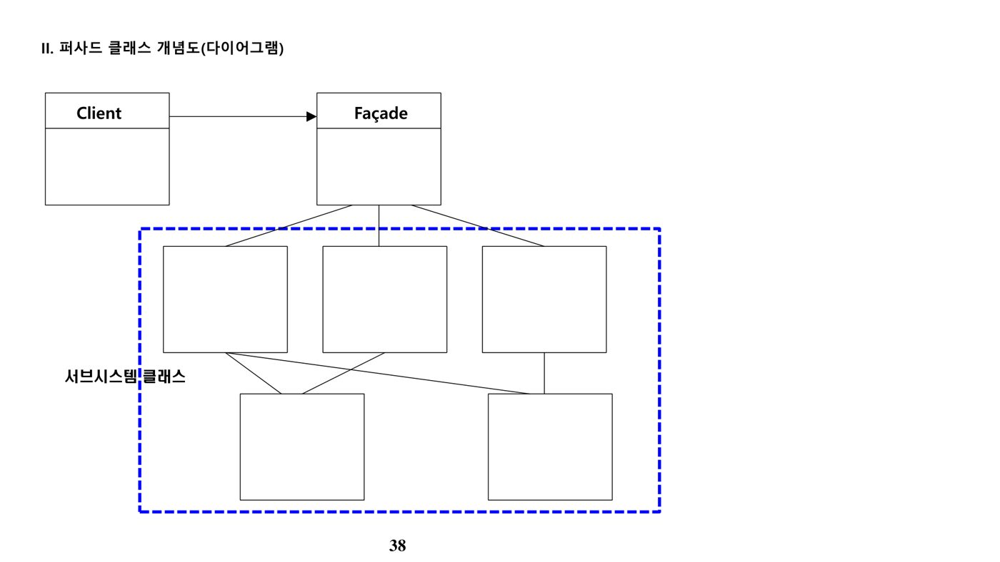
마. Composite Pattern
객체들을 트리 구조로 구성해, 부분과 전체를 나타내는 계층 구조를 만드는 패턴이다. 부분들이 모여 있지만 이를 묶어 전체로 다룰 수 있는 구조를 말하며(예: 메뉴 설계 시 MenuComponent를 MenuItem·Menu가 상속받아 getName()·getPrice() 등을 동일하게 처리), 폴더·파일처럼 재귀적인 구조를 동일하게 다룰 때 적용한다.
| 참여 클래스 | 설명 |
|---|---|
| Component | 인터페이스 클래스 |
| Composite | 복합 객체 클래스 |
| Leaf | 개별 객체 클래스 |
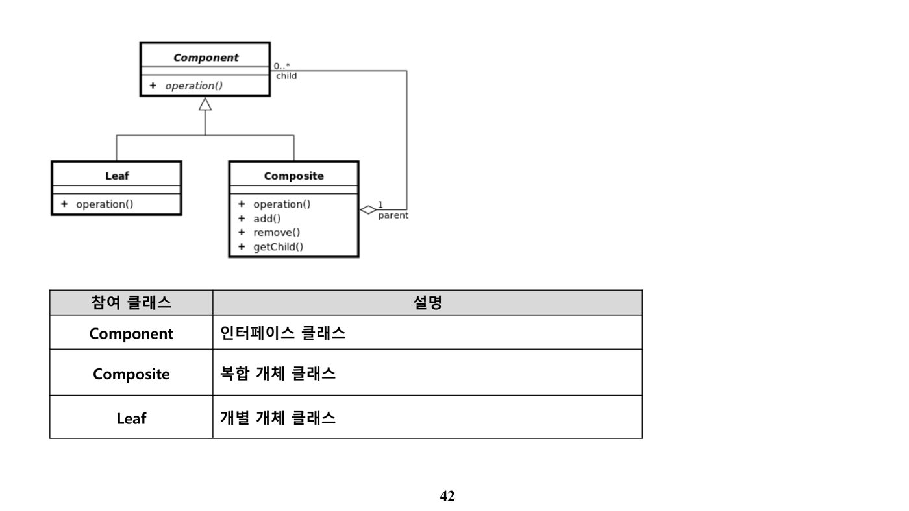
바. Bridge Pattern
구현뿐 아니라 추상화된 부분까지 변경해야 하는 경우에 사용한다. 추상 클래스·인터페이스와, 이를 구현한 클래스를 서로 다른 클래스 계층에 넣어 분리한다. 장점은 구현과 인터페이스의 분리이나, 단점은 디자인이 복잡해진다는 것이다.
| 참여 클래스 | 설명 |
|---|---|
| Abstraction | 추상 클래스, 인터페이스 제공 |
| RefinedAbstraction | Abstraction에 정의된 인터페이스를 확장(기능 추가) |
| Implementor | 구현 클래스 계층구조 — ConcreteImplementor에 대한 인터페이스 제공 |
| ConcreteImplementor | 구상 클래스, Implementor의 인터페이스를 구현 |
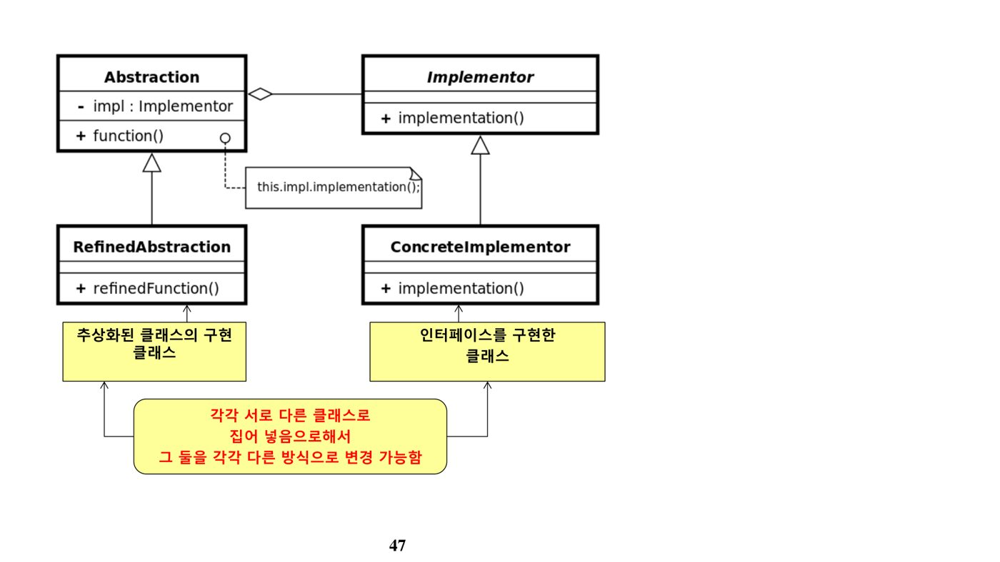
- Adapter: 이미 있는(호환 안 되는) 인터페이스를 원하는 인터페이스로 "변환"
- Facade: 여러 복잡한 인터페이스를 하나의 "단순한 창구"로 통합
- Bridge: 추상화와 구현을 "애초에 분리"해서 독립적으로 확장(사후 변환이 아님)
- Decorator: 기존 객체를 감싸서 책임(기능)을 "동적으로 추가"
사. Flyweight Pattern
어떤 클래스의 인스턴스를 한 개만 가지고, 여러 개의 "가상 인스턴스"를 제공하고 싶을 때 사용한다(예: TreeManager가 모든 가상 Tree 객체의 상태를 2차원 배열에 저장하고, Tree 객체 자체는 하나의 인스턴스만 생성해 공유).
아. Proxy Pattern
특정 객체로의 접근을 제어하기 위한 대리인(대변인) 역할의 객체를 제공하는 패턴이다. 원격 프록시(원격 객체 접근 제어) 외에 가상 프록시, 보호 프록시가 있다. 기억법: 프록시 서버는 클라이언트-서버 간 중계 서버다.
3. 행위 패턴(Behavioral Patterns)
가. 행위 패턴 개요
행위 패턴은 객체 간 상호작용과 책임의 분산 방식을 다룬다. Command, Chain of Responsibility, Interpreter, Iterator, Mediator, Memento, Observer, State, Strategy, Template Method, Visitor가 대표적이다.
나. Command Pattern
| 구분 | 설명 |
|---|---|
| 개념 | 요구 사항을 객체로 캡슐화하며, 매개변수를 통해 다양한 요구사항을 담을 수 있음(클라이언트로부터 정보를 받아 execute()를 호출해 처리 지시를 전달) |
| 장점 | 요청 내용을 캡슐화 |
| 참여 클래스 | 설명 |
|---|---|
| Command | 명령 추상클래스. execute() 메소드를 가짐 |
| Receiver | 수신자 |
| Invoker | 발동자 |
| Client | 클라이언트 |
다. Chain of Responsibility(역할 사슬) Pattern
한 요청을 하나 이상의 객체가 사슬(Chain)로 연결되어 연속적으로 처리할 수 있도록 하는 행위 패턴이다(예: 윈도우 시스템의 마우스 클릭·키보드 이벤트가 다음 처리자로 전달되는 방식).
라. Strategy Pattern
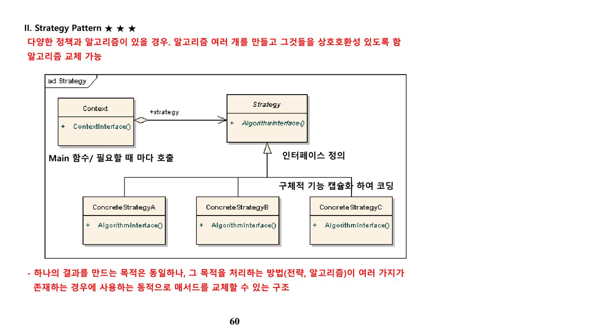
마. State Pattern
상태가 변경될 때마다 별도의 행위를 지정해야 하는 객체를 정의·조직화하는 방법을 제공하는 행위 패턴이다.
| 참여 클래스 | 설명 |
|---|---|
| State | 추상 클래스(예: abstract void Handle(Context context)) |
| ConcreteState | 구상 클래스(상태별로 각각 정의) |
바. Template Method Pattern
메소드에서 알고리즘의 골격(구조)은 그대로 유지하면서, 알고리즘의 일부 단계만 서브클래스에서 재정의(Override)할 수 있게 하는 패턴이다. 추상 클래스로 선언해 실제 연산은 서브클래스가 구현하도록 하며, 서브클래스가 건드리면 안 되는 단계는 final로 선언해 변경을 금지한다.
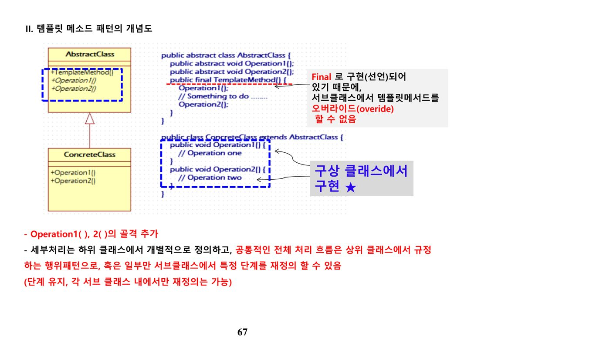
사. Memento Pattern
객체를 이전 상태로 복구해야 하는 경우(예: 사용자의 "작업 취소" 요청) 사용하는 패턴이다. 자신의 상태 정보를 스냅샷(메멘토 객체)으로 저장해 두었다가, 필요할 때 그 상태로 복원한다. 저장된 상태를 별도의 객체(메멘토)로 보관하므로 안전하다.
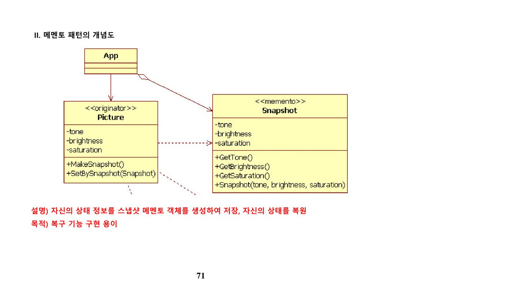
아. Observer Pattern
한 객체(Subject)의 상태가 바뀌면, 그 객체에 의존하는 다른 객체(Observer)들에게 연락이 가고 자동으로 내용이 갱신되는 일대다(One-to-Many) 의존성을 정의한 패턴이다(예: 신문 구독 메커니즘 — 출판사가 Subject, 구독자가 Observer로, 데이터가 변경되면 새 값을 옵저버에게 통지).
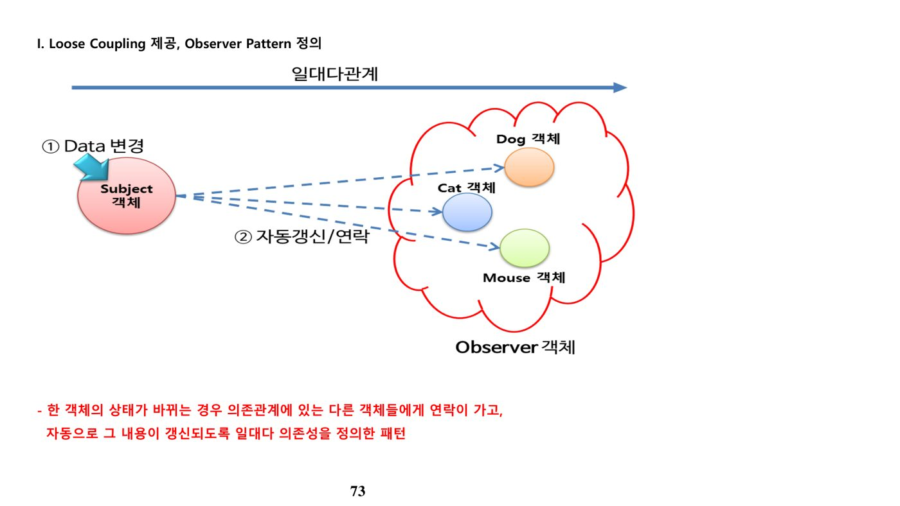
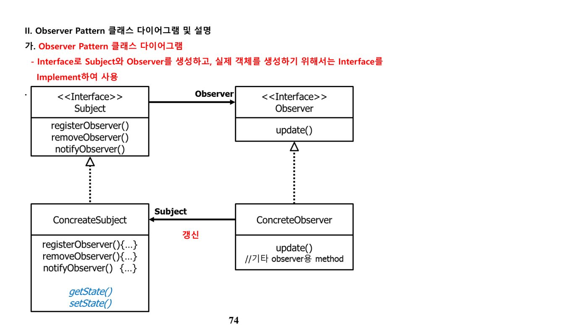
| 구분 | 객체 | 설명 |
|---|---|---|
| Interface | Subject | Observer들이 관심을 갖는 대상의 인터페이스. Observer 등록·제거·알림 메소드 제공 |
| Observer | 변경 내용을 전달받을 객체의 인터페이스. 데이터 변경 수신 후 행동하기 위한 update() 메소드 제공 | |
| Class | ConcreteSubject | Subject 인터페이스를 구현해 Subject 역할 수행 |
| ConcreteObserver | Observer 인터페이스를 구현해 데이터 변경 시의 행동(update())을 정의 |
자. 그 외 행위 패턴 정리
| 패턴 | 설명 |
|---|---|
| 미디에이터(Mediator) | 객체들 간의 상호작용을 캡슐화해 분리함으로써, 상호작용의 유연한 변경을 지원하는 패턴. EAI의 주요 기능이 바로 미디에이터 기능 |
| 인터프리터(Interpreter) | 문법 자체를 캡슐화해 문법 검사와 함께 필요한 동작을 수행하는 방법을 제공. 특정 언어의 인터프리터를 만들 때 유용 |
| 이터레이터(Iterator) | 내부 구조를 노출하지 않고 복합 객체의 원소를 순차적으로 접근하도록 지원(예: 자바의 java.util.Iterator 인터페이스) |
| 비지터(Visitor) | 복합 객체를 이루는 원소의 특성에 따라 동작을 수행하도록 지원. 기능을 수행하는 클래스와 복합 객체 클래스들 간의 결합도를 최소화 |
차. 관련 기출 서술형 문제
- 디자인 패턴과 아키텍처 스타일의 차이를 설명하시오. (감리 81회 1교시)
- 소프트웨어 공학에서 디자인 패턴의 개념과 정의, 구성과 내용을 논하고 많이 사용되는 디자인 패턴의 종류를 들고 특징을 논하시오. (감리 84회 4교시)
- GoF(Gang of Four)가 제시한 디자인 패턴의 개념과 종류를 설명하고, 인터프리터(Interpreter) 패턴을 설명하시오. (감리 87회 3교시)
- GoF의 디자인 패턴 영역을 목적과 범위에 따라 분류하고 분류별 특성을 설명하시오. 또한 화이트박스 재사용, 블랙박스 재사용, 위임(Delegation)이 패턴과 어떤 관계가 있는지 설명하시오. (정보관리 104회 3교시)
- 설계패턴(Design Pattern)의 개념 및 유형을 설명하시오. (모의고사)
- 디자인 패턴의 특징·유형을 설명하고, 조직 내 효과적인 적용을 위한 전략을 제시하시오. (모의고사)
- Adapter Pattern에 대해 설명하시오. (모의고사)
- GoF가 제시한 디자인 패턴의 개념과 종류, 그리고 옵저버(Observer) 패턴을 설명하시오. (모의고사)
- 디자인패턴의 구성 및 유형과 Chain of Responsibility 패턴을 설명하시오. (모의고사)
- GoF 디자인패턴 중 생성패턴인 Factory Method Pattern에 대해 설명하시오. (모의고사)
- 디자인 패턴의 세 가지 분류를 설명하고, 스트레티지·퍼사드·싱글턴 패턴을 분류와 연계해 설명하고 클래스 다이어그램을 그리시오. (모의고사)
- GoF의 디자인 패턴 중 정의·종류, Façade Pattern, Bridge Pattern, Strategy Pattern을 설명하시오. (모의고사)
- GoF 패턴 중 데코레이션 패턴, 템플릿 메소드 패턴, 커맨드 패턴을 설명하시오. (모의고사)
- 디자인 패턴 중 Composite 패턴과 Decorator 패턴을 비교 설명하시오. (모의고사)
- 객체지향 설계 5원칙 중 DIP, LSP, OCP와 템플릿 메소드 패턴(Template Method Pattern)을 설명하시오. (모의고사)
- 디자인 패턴의 개념 및 구성요소를 설명하고 Observer 패턴과 Mediator 패턴을 상세히 기술하시오. (모의고사)
- 선풍기의 상태 머신 다이어그램을 작성하고, State 패턴에 기반한 클래스 다이어그램을 작성하시오. (모의고사)
📚 전체 기출·예상문제 (9문항) — 원문 수록
본 강좌 원본 PDF에 수록된 기출·예상문제를 빠짐없이 원문 그대로 정리했습니다. 정답·해설은 강의 원문 기준입니다.